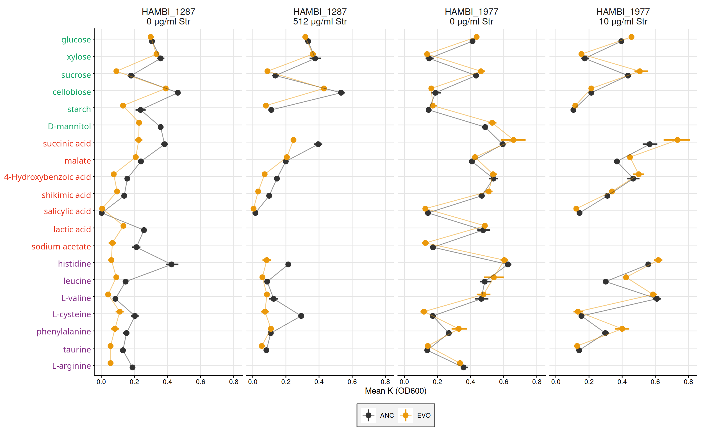
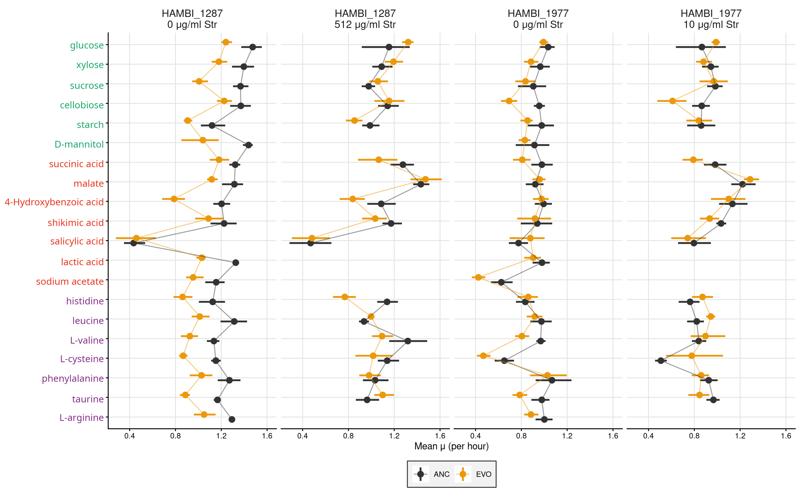

05.C Growth curves on M9MM + single carbon
Analysis and plots across streptomycin concentrations
1 Introduction
Ancestral (streptomycin sensitive) and evolved (streptomycin resistant) forms of Citrobacter koseri HAMBI_1287 and Pseudomonas chlororaphis HAMBI_1977 were grown on 20 single carbon sources in M9 minimal medium, with and without streptomycin.
This analysis is ported from scripts/10_one_carbon_gcurves_logphase/03_analyze_gcurves.qmd in hambiEvoEnvCoexist, which restricted itself to the streptomycin-free wells. Here we keep every streptomycin concentration.
Dosing is per species: HAMBI_1977 wells were dosed at 10 μg/ml and HAMBI_1287 wells at 512 μg/ml. There is no concentration at which both species were tested, so the streptomycin panels below compare ANC against EVO within a species, never one species against the other at matched dose.
Four carbon sources — D-mannitol, L-arginine, lactic acid and sodium acetate — were only ever run without streptomycin. They appear as gaps in the +Str panels rather than being dropped, so that rows stay aligned across panels.
2 Setup
2.1 Libraries
2.2 Global variables
Show/hide code
data_interim <- here::here("data", "interim", "05_one_carbon_gcurves")
data_processed <- here::here("data", "processed", "05_one_carbon_gcurves")
figs <- here::here("output", "figures")
# make output directories if they don't exist
fs::dir_create(data_interim)
fs::dir_create(data_processed)
fs::dir_create(figs)3 Load data
4 Processing
4.1 Growth rates per well (spline based estimate)
Using the tool growthrates to estimate mu_max. I have found this works a lot better than gcplyr and is more convenient than using another tool outside of R. Nonparametric estimate growth rates by spline is very fast. Fitting to a model takes more time resources. Generally it is best to try multiple approaches and to visualize/check the data to make sure it makes sense.
Unlike upstream, the streptomycin-dosed wells are kept here.
Show/hide code
gcurves_thin_sm <- df |>
# exclude blanks, but keep every streptomycin concentration
filter(strainID != "blank") |>
# need to add a small floor for numerical stability for the spline fit
mutate(
OD600_rollmean_spline = if_else(OD600_rollmean == 0, 1e-3, OD600_rollmean)
) |>
# make uniq id
mutate(id = paste0(plate_name, "|", well))Smoothing splines are a quick method to estimate maximum growth. The method is called nonparametric, because the growth rate is directly estimated from the smoothed data without being restricted to a specific model formula. From growthrates documentation:
The method was inspired by an algorithm of Kahm et al. (2010), with different settings and assumptions. In the moment, spline fitting is always done with log-transformed data, assuming exponential growth at the time point of the maximum of the first derivative of the spline fit. All the hard work is done by function smooth.spline from package stats, that is highly user configurable. Normally, smoothness is automatically determined via cross-validation. This works well in many cases, whereas manual adjustment is required otherwise, e.g. by setting spar to a fixed value [0, 1] that also disables cross-validation.
4.2 Compute K per well
Simply take the maximum observed OD600 value to get a “dumb” empirical estimate of the carrying capacity.
4.3 Compute AUC per well
Area under the growth curve (AUC) is computed per unique well using the trapezoidal rule over time in hours. OD600_rollmean values are used to reduce noise.
4.4 Write growth summaries to disc
streptomycin_ug_ml is carried into the summary table here — upstream it was a constant 0 and could be dropped.
Show/hide code
myformatter <- function(df, grvar) {
df |>
dplyr::select(
species = strainID,
evo_hist,
streptomycin_ug_ml,
carbon_source,
carbon_class = class,
{{ grvar }}
) |>
mutate(
genotype = str_sub(evo_hist, 1, 1),
) |>
arrange(
species,
genotype,
streptomycin_ug_ml,
carbon_source,
carbon_class
) |>
group_by(
species,
genotype,
streptomycin_ug_ml,
carbon_source,
carbon_class
) |>
mutate(replicate = LETTERS[1:n()]) |>
ungroup() |>
dplyr::select(
species,
genotype,
streptomycin_ug_ml,
carbon_source,
carbon_class,
replicate,
{{ grvar }}
)
}
left_join(myformatter(gr_per_well, mumax), myformatter(k_per_well, max_od)) |>
left_join(myformatter(auc_per_well, auc)) |>
rename(
growth_rate = mumax,
carrying_capacity = max_od,
area_under_growth_curve = auc
) |>
write_tsv(here::here(data_processed, "growth_summaries_carbon.tsv"))4.5 Bootstrap summary by strainID, evo_hist, streptomycin_ug_ml, carbon_source
Show/hide code
set.seed(7391)
N_BOOT <- 2000
auc_summary <- auc_per_well |>
summarize(
boot_mean_ci(auc),
.by = c(strainID, evo_hist, streptomycin_ug_ml, carbon_source, class)
)
k_summary <- k_per_well |>
summarize(
boot_mean_ci(max_od),
.by = c(strainID, evo_hist, streptomycin_ug_ml, carbon_source, class)
)
gr_summary <- gr_per_well |>
summarize(
boot_mean_ci(mumax),
.by = c(strainID, evo_hist, streptomycin_ug_ml, carbon_source, class)
)Replicate counts per point, so the figure captions do not have to assert one.
5 Plot results
Show/hide code
# order of the carbon sources
carbon_levels <- rev(c(
"glucose",
"xylose",
"sucrose",
"cellobiose",
"starch",
"D-mannitol",
"succinic acid",
"malate",
"4-Hydroxybenzoic acid",
"shikimic acid",
"salicylic acid",
"lactic acid",
"sodium acetate",
"histidine",
"leucine",
"L-valine",
"L-cysteine",
"phenylalanine",
"taurine",
"L-arginine"
))Upstream the axis-label colours were a hard-coded run of 7/7/6. Here they are looked up from the class column instead, so the colouring cannot silently drift out of step with carbon_levels.
Each panel is one species at one streptomycin concentration. Species are never compared across panels at matched dose, because no such dose exists.
Show/hide code
panel_levels <- c(
"HAMBI_1287\n0 μg/ml Str",
"HAMBI_1287\n512 μg/ml Str",
"HAMBI_1977\n0 μg/ml Str",
"HAMBI_1977\n10 μg/ml Str"
)
add_panel <- function(df) {
df |>
mutate(
panel = factor(
paste0(
str_replace(strainID, "^H", "HAMBI_"),
"\n",
streptomycin_ug_ml,
" μg/ml Str"
),
levels = panel_levels
)
)
}Show/hide code
plotter <- function(df, lab) {
dw <- 0.5
psize <- 3
lsize <- 1
df |>
add_panel() |>
mutate(carbon_source = factor(carbon_source, levels = carbon_levels)) |>
# fill in the untested species/streptomycin/carbon combinations as explicit
# NA rows. Without this the connecting line is drawn straight across the
# four carbon sources that were never run with streptomycin, which reads as
# an interpolated value rather than a gap.
tidyr::complete(panel, evo_hist, carbon_source) |>
ggplot(aes(y = mn, x = carbon_source, color = evo_hist)) +
geom_linerange(
aes(ymin = ci_lo, ymax = ci_hi),
position = position_dodge(width = dw),
size = lsize
) +
geom_point(position = position_dodge(width = dw), size = psize) +
geom_line(
aes(group = evo_hist),
alpha = 0.5,
size = lsize - 0.5,
position = position_dodge(width = dw),
) +
# fixed rather than free_x: the +Str panels are missing four carbon
# sources, and free scales would misalign the rows across panels
facet_grid(~panel) +
labs(
y = lab,
x = NULL,
color = "Str Resistance",
) +
scale_x_discrete(
labels = function(x) {
glue::glue("{{.{label_colors} {x}}}")
}
) +
scale_color_manual(values = c("#333333", "#EB990C")) +
coord_flip() +
theme_classic() +
theme(
axis.text.y = marquee::element_marquee(size = 11),
strip.text = element_text(size = 12),
panel.grid.major = element_line(color = "grey90"),
panel.grid.minor = element_blank(),
strip.placement = "outside",
strip.background = element_blank(),
# upstream this legend sat inside the panel at (0.95, 0.95). With four
# panels instead of two it lands on top of the right-hand panel's points,
# so it moves out of the plotting area here.
legend.position = "bottom",
legend.key.size = unit(7, "mm"),
legend.background = element_rect(
fill = "grey95",
colour = "grey20",
linewidth = 0.5
),
legend.title = element_blank()
)
}5.1 Plot differences in mean maximum density (empirical K)

5.2 Plot differences in mean AUC (area under growth curve)
5.3 Plot differences in mean growth rate
